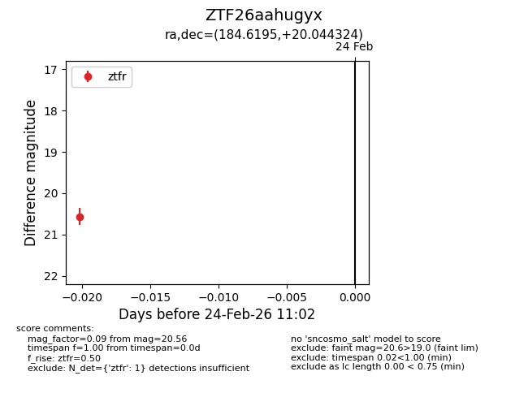
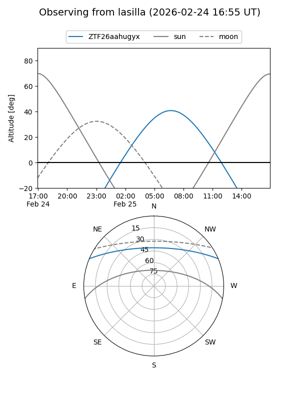
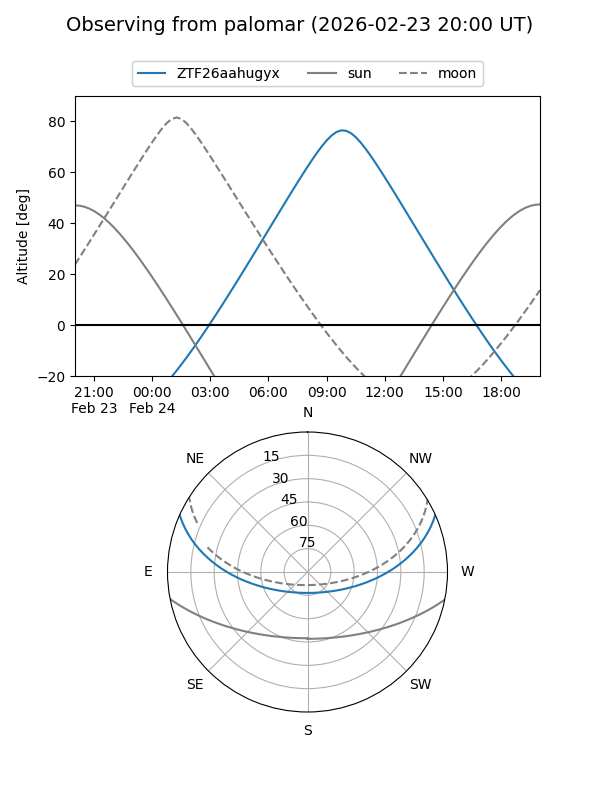

ZTF26aahugyx
Target ZTF26aahugyx at 2026-02-24 11:04
Aliases and brokers:
FINK: link
Lasair: link
ALeRCE: link
alt names
ZTF26aahugyx (ztf,fink_ztf)
Coordinates:
equatorial (ra, dec) = 184.6195,+20.04432
equatorial (HMS+DMS) = 12:18:28.69,+20:02:39.57
galactic (l, b) = (254.3802,+79.65215)
Flags:
Photometry:
last ztfr=20.56
1 ztfr detections
Lightcurve

Visibility


Additional plots